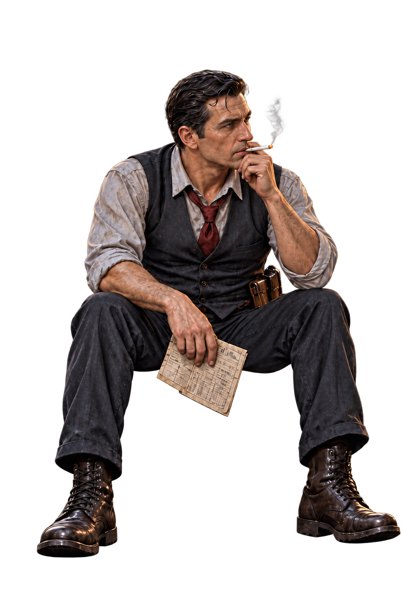
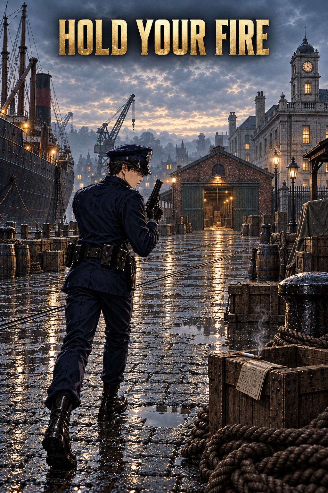
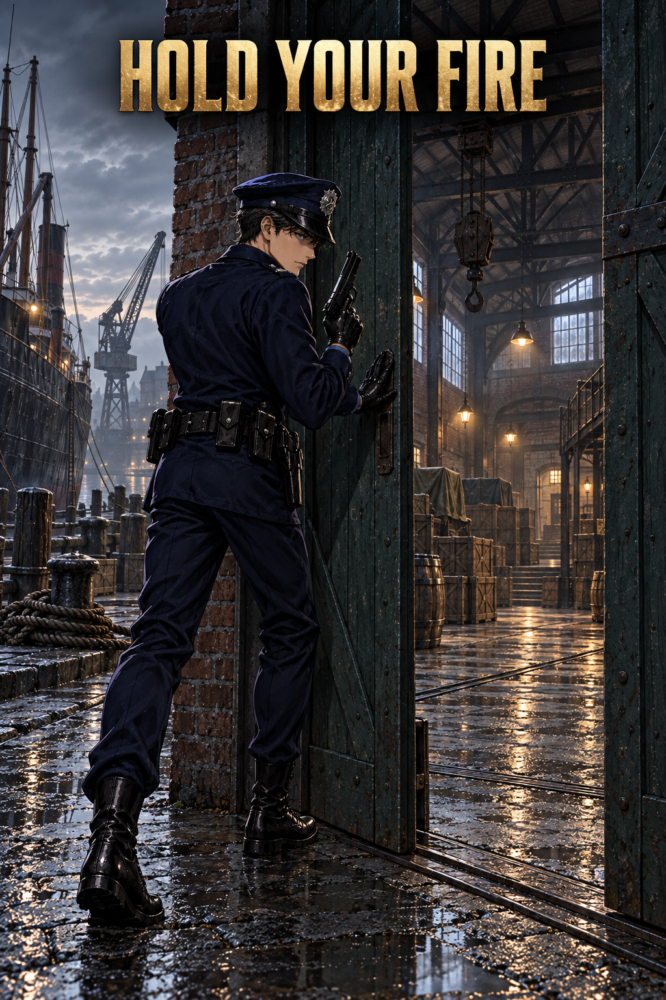
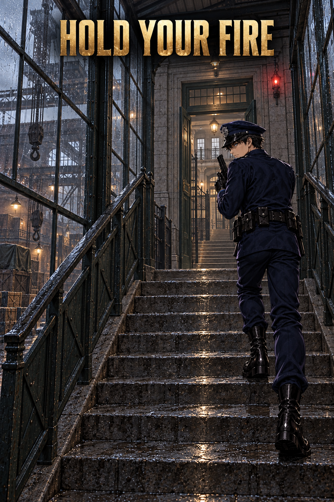
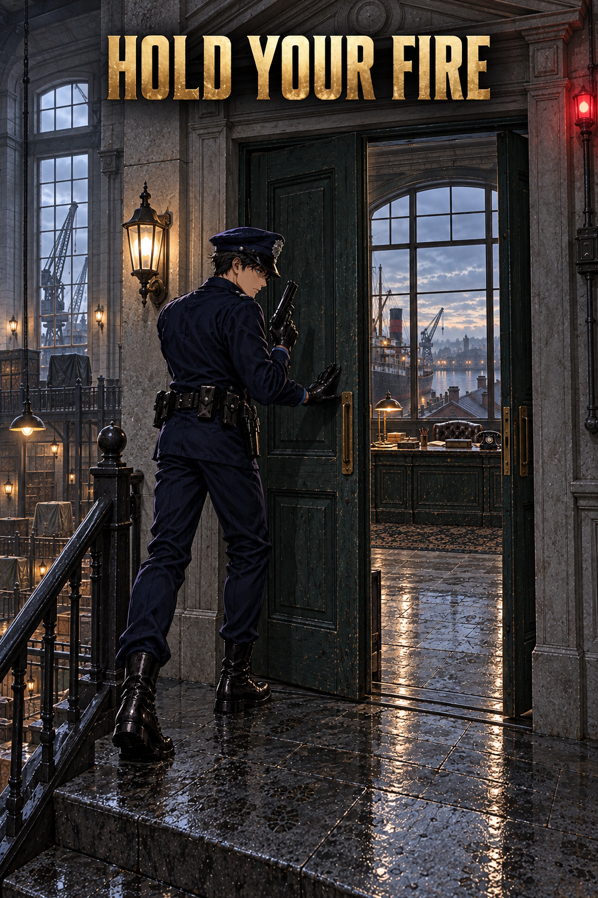

검은 부두 · 2P 구도 검토
오프닝 → WAVE 1
작업단원
피격 재생
대기 자세
배경 원본
투명 캐릭터
쓰러짐 시트

오프닝 · 배경 + 캐릭터 분리 합성

오프닝 → 1웨이브 · 부두 진입
쓰러짐 · 4프레임
1 · 앉은 자세에서 피격
2 · 상자에서 미끄러짐
3 · 바닥으로 쓰러짐
4 · 완전히 쓰러진 상태
전투 배경
1 · 부두
2 · 창고
3 · 세관
4 · 보스 사무실
1P + 2P
전체
원본 이미지
1P
2P
HOLD YOUR FIRE

1 → 2 · 창고 진입

2 → 3 · 세관으로 이동

3 → 4 · 사무실 진입